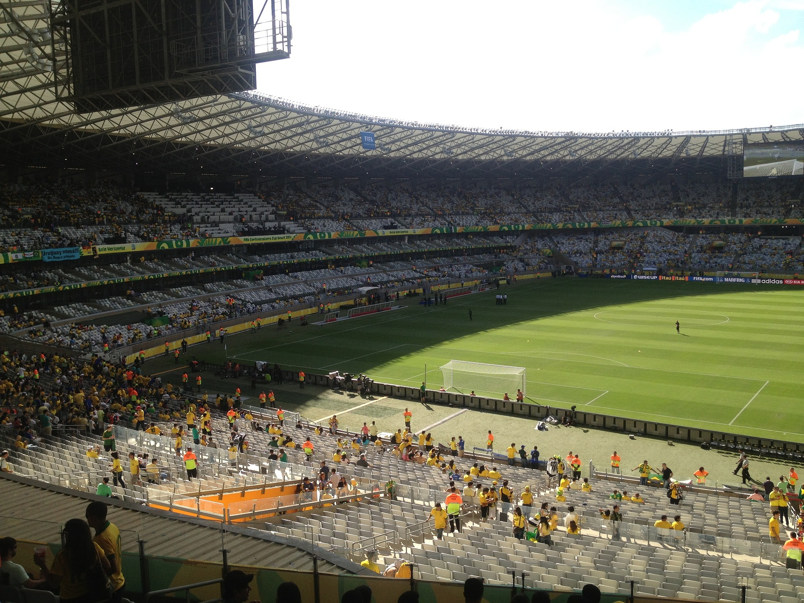
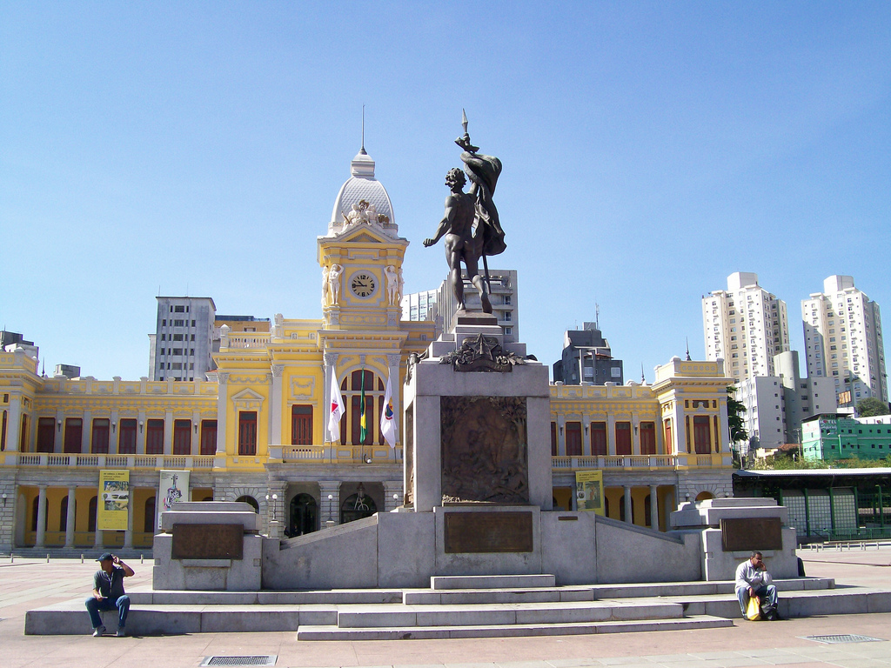

Para quem gosta de assistir futebol o Estádio Governador Magalhães Pinto conhecido mais como "Mineirão", é um dos mais famosos pontos turísticos de Minas Gerais onde oferece um bom lugar para assistir uma bela partida de futebol. Localizado na Av. Antônio Abrahão Caran, 1001 - São José, Belo Horizonte, Minas Gerais - MG.

Praça Rui Barbosa, conhecida também como Praça da Estação.Localizado no Centro, Belo Horizonte, Minas Gerais - MG.

Praça Tiradentes. Localizado na cidade de Ou Preto, Minas Gerais - MG.